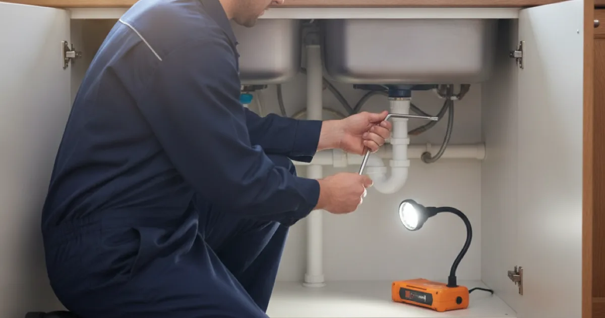

Garbage Disposal Repair in Westchester County, NY
Before you call anyone about a dead disposal, there is a reset button and a hex key that fix most of them. We would rather you saved the call — here is how.
- Licensed & Insured
- Upfront Pricing
- Clean, Respectful Technicians
- Locally Owned & Operated

Try this before you call
A disposal that hums but will not turn, or does nothing at all, is usually one of two simple things. Both are safe to try, as long as you keep your hands out of the unit entirely.
- If it is completely dead — no hum — find the reset button on the bottom of the unit under the sink. Press it. Disposals trip their own overload protection routinely, and this alone fixes a large share of “dead” ones.
- If it hums but does not spin, it is jammed. Turn it off at the wall or the switch first. Then find the hex key that came with it — there is a matching socket in the centre of the underside — and work it back and forth to free the flywheel.
- Then press reset and try again.
Never put your hand into a disposal, even switched off. Use tongs or pliers to remove anything visible, and use the hex key for a jam. Those two steps solve most no-power and jammed cases in a few minutes for free.
What the symptom usually means
- Completely dead, no hum — tripped reset, a tripped breaker, or a wiring or switch fault. Reset first.
- Hums but will not turn — jammed flywheel. Free it with the hex key.
- Leaking — where it leaks tells you a lot. From the top, the sink flange seal. From the side, a drain or dishwasher connection. From the bottom, the internal seals have failed and the unit is usually done.
- Drains slowly or backs up — often the trap or branch line beyond the disposal rather than the unit, and it may need clearing the line beyond it rather than a new disposal.
- Loud metallic rattle — something hard caught inside. Cut the power and remove it before running again.
A leak from the bottom of the unit is the one that usually means replacement rather than repair — the internal seals are not serviceable, and once they go, the unit is on its way out.
What kills a disposal early
Disposals are tougher than their reputation but not indestructible. A few habits shorten their life more than anything else:
- Grease. It congeals downstream and clogs the line the disposal drains into, even though the unit itself handles it fine at first.
- Fibrous and starchy foods — celery, onion skins, potato peelings, pasta, rice — which wrap the flywheel or swell in the trap.
- Coffee grounds and eggshells, which accumulate as a sludge rather than washing through.
- Too little water. Running plenty of cold water during and after use is what carries waste through. Skimping is a common cause of clogs.
- Bones and hard pits, which are what most jams and rattles turn out to be.
Used sensibly — cold water running, soft scraps only, nothing fibrous or greasy — a disposal lasts years. Most early failures trace back to one of the habits above rather than a fault in the unit. Family Handyman has a useful list of what should and should not go down a disposal if you want to get more life out of yours.
Repair or replace, and what it costs
Once the reset and the hex key have been ruled out, the question is repair or replace, and where the unit leaks decides it. A flange or connection leak is often repairable; a leak from the bottom of the unit means the internal seals have failed and it needs replacing.
A disposal swap is a modest job, and simplest done alongside sink or faucet work since the space is already open. We give you the price before starting and will always tell you when a reset would have done the job for free.
Getting more life out of it
Most disposals that fail early were not faulty — they were fed the wrong things. Run plenty of cold water during and after use, keep grease and fibrous or starchy scraps out, and avoid treating it as a bin for bones and pits.
Used sensibly, a disposal lasts years. If yours jams or backs up regularly, the cause is usually what is going down it or the line beyond it rather than the unit itself, and that is worth sorting before replacing a disposal that is fine.
Common questions
Where is the reset button?
On the bottom of the unit, under the sink — a small, usually red button in the centre of the underside. Pressing it fixes a surprising number of apparently dead disposals.
Is it safe to reach in and clear a jam?
Never with your hand, even switched off. Use tongs or pliers for anything visible, and the hex key in the bottom socket to free a jammed flywheel. That is what the key is for.
My disposal leaks. Repair or replace?
Depends where. A flange or connection leak is often repairable. A leak from the bottom of the unit means failed internal seals, and that generally means replacement.
How long should a disposal last?
Many years with sensible use. Early failures are usually about what went down it — grease, fibrous scraps, too little water — rather than the unit being poor.
Can you replace it while doing other work?
Easily. A disposal swap fits naturally alongside sink work under the counter or a faucet change, since the space is already open and the water already off.
We will save you the call where we can
Licensed, insured, and honest about the reset button first.